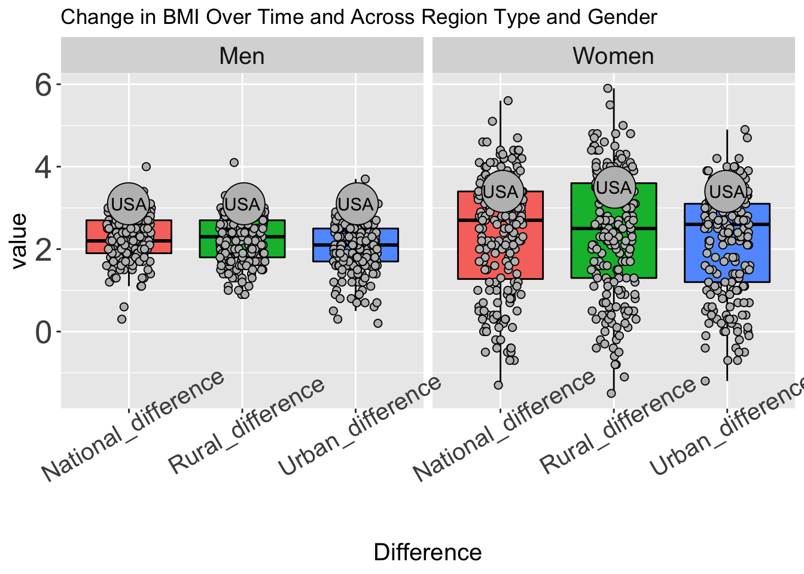
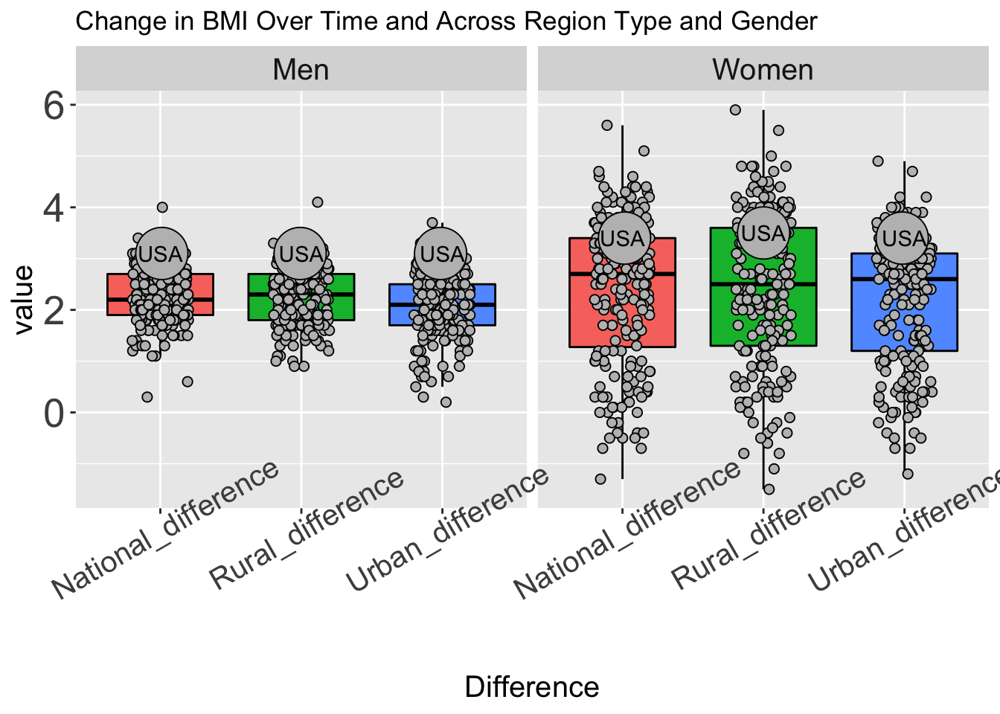
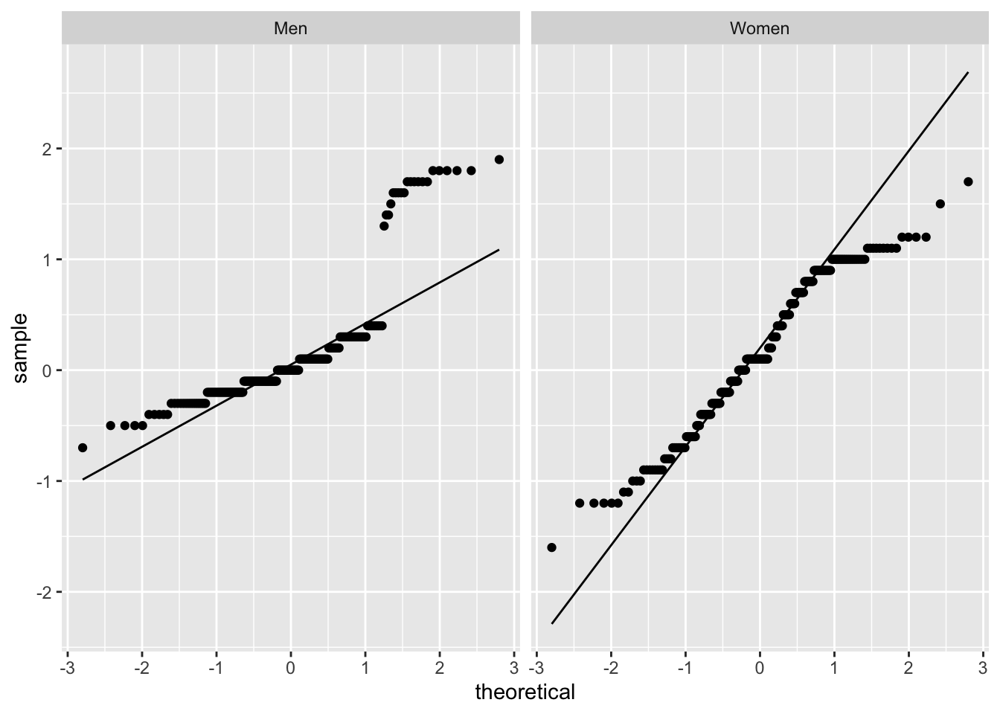
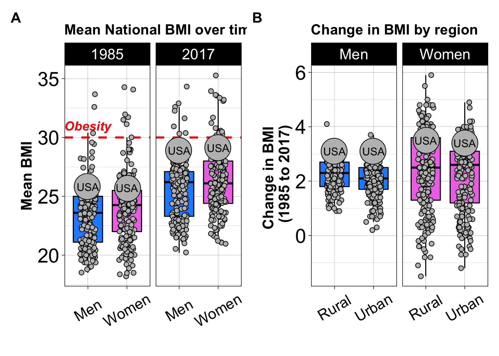

Our first main question was: Is there a difference between rural and urban BMI estimates around the world? Let’s look at the national mean BMI estimates for each of the years:
Our 2nd main question was: How have BMI estimates changed from 1985 to 2017? Let’s look at the change in rural and urban mean BMI estimates over time:
Let’s put the plots together to see how the change over the years differs between the regions. We will use again use facet_wrap() to do this:
One third main questions was: How do the different countries compare? Or in other words what do the individual dots represent in our box plots? We will take a look using geom_label():
If we include all country names this is a bit too much… so perhaps we should focus on just the extreme BMI values using filter() function of thedplyr package. We will also use the ggrepel package to have our labels not overlap each other.
Part of the third question was: How does the United States of America compare? So let’s label the data points for the United states.
Differences in rate of change
How does the rate of change in BMI differ between groups? Which group might especially need attention?
First let’s calculate the differences in BMI from 2017 and 1985 and add this to our BMI_long data object. This will create new variables called Rural_difference, Urban_difference, and National_difference.
# A tibble: 6 x 4
Country Sex Difference value
<chr> <chr> <chr> <dbl>
1 Afghanistan Men Rural_difference 2.8
2 Afghanistan Men Urban_difference 1.2
3 Afghanistan Men National_difference 2.6
4 Afghanistan Women Rural_difference 3.5
5 Afghanistan Women Urban_difference 3.1
6 Afghanistan Women National_difference 3.80
Let’s replace “United states of America” with “USA” and make a plot with this data to compare the change in BMI:
BMI_diff_long[["Country"]] <-BMI_diff_long[["Country"]] %>%
str_replace( pattern = "United States of America", replacement = "USA")
ggplot(BMI_diff_long, aes(x = Difference, y = value, col = Difference)) +
geom_boxplot(outlier.shape = NA, color = "black" , aes(fill = Difference)) +
facet_grid(~ Sex) +
geom_jitter(data=subset(BMI_diff_long),
aes(x =Difference, y =value),
width = .2, size = 2, shape = 21, color = "black", fill = "gray") +
# This will add the individual country data points
# The shape 21 allows for a different fill and outline color
# The width determines how wide the jitter points are plotted
geom_jitter(data=subset(BMI_diff_long, Country == "USA"),
aes(x = Difference, y = value),
width = .02, size = 12, shape = 21, color = "black", fill = "gray") +
# This will add points that are larger for the USA data
geom_text(data=subset(BMI_diff_long, Country == "USA"),
aes(x =Difference, y = value, label = Country), color = "black") +
# This will add USA labels to the USA points
theme(legend.position = "none",
# This is useful for removing the legend
axis.text.x = element_text(size = 15,angle = 30),
# this changes the size and angle of the x axis point labels
axis.text.y = element_text(size = 20),
axis.title.y = element_text(size = 15),
axis.title.x = element_text(size = 15),
strip.text.x = element_text(size = 15)) +
# this changes the size of x axis labels for the facet
ggtitle( "Change in BMI Over Time and Across Region Type and Gender")

We can now see that the rate of change from 1985 to 2017 appears to be larger in the women compared to the men in all regions. The group with the largest increase in the USA is the women living in rural areas.
Let’s check the difference with some statistical tests:

# A tibble: 1,200 x 4
Country Sex Difference value
<chr> <chr> <chr> <dbl>
1 Greece Women Rural_difference -1.5
2 Greece Women National_difference -1.3
3 Greece Women Urban_difference -1.20
4 Italy Women Rural_difference -1.10
5 Czech Republic Women Rural_difference -0.8
6 Spain Women Rural_difference -0.800
7 Lithuania Women Urban_difference -0.700
8 Lithuania Women National_difference -0.700
9 Spain Women Urban_difference -0.700
10 Spain Women National_difference -0.700
# … with 1,190 more rows

Mood two-sample test of scale
data: pull(filter(BMI_diff_long, Sex == "Women", Difference == "Rural_difference"), and pull(filter(BMI_diff_long, Sex == "Women", Difference == "Urban_difference"), value) and value)
Z = 3.5379, p-value = 0.0004033
alternative hypothesis: two.sided
Mood two-sample test of scale
data: pull(filter(BMI_diff_long, Sex == "Men", Difference == "Rural_difference"), and pull(filter(BMI_diff_long, Sex == "Men", Difference == "Urban_difference"), value) and value)
Z = 0.59121, p-value = 0.5544
alternative hypothesis: two.sided
Mood two-sample test of scale
data: pull(filter(BMI_diff_long, Sex == "Women", Difference == "Rural_difference"), and pull(filter(BMI_diff_long, Sex == "Men", Difference == "Rural_difference"), value) and value)
Z = 10.843, p-value < 2.2e-16
alternative hypothesis: two.sided
Two-sample Kolmogorov-Smirnov test
data: pull(filter(BMI_diff_long, Sex == "Women", Difference == "Rural_difference"), and pull(filter(BMI_diff_long, Sex == "Women", Difference == "Urban_difference"), value) and value)
D = 0.16534, p-value = 0.009043
alternative hypothesis: two-sided
Two-sample Kolmogorov-Smirnov test
data: pull(filter(BMI_diff_long, Sex == "Men", Difference == "Rural_difference"), and pull(filter(BMI_diff_long, Sex == "Men", Difference == "Urban_difference"), value) and value)
D = 0.14586, p-value = 0.02995
alternative hypothesis: two-sided
Two-sample Kolmogorov-Smirnov test
data: pull(filter(BMI_diff_long, Sex == "Men", Difference == "Rural_difference"), and pull(filter(BMI_diff_long, Sex == "Women", Difference == "Rural_difference"), value) and value)
D = 0.35204, p-value = 5.645e-11
alternative hypothesis: two-sided
Now we have performed seven comparisons (4 earlier) so we should apply our multiple testing correction
[1] 0.007142857
We see that there is a significant difference in the change in BMI Rural communities between men and women. This change is larger for women.
Importantly- we noticed that it appears to be specific countries where BMI shows a particular increase especially for women. Which countries are those? how does that compare with the US? Clearly the US is among the countries with the highest differences.
# A tibble: 6 x 4
Country Sex Difference value
<chr> <chr> <chr> <dbl>
1 USA Men Rural_difference 3.10
2 USA Men Urban_difference 3.1
3 USA Men National_difference 3.10
4 USA Women Rural_difference 3.5
5 USA Women Urban_difference 3.40
6 USA Women National_difference 3.4
In the US, focus should be placed on both urban and rural women to improve this public health issue.
Here we can see the countries have the largest differences in BMI from 1985-2017:
# A tibble: 6 x 4
Country Sex Difference value
<chr> <chr> <chr> <dbl>
1 Egypt Women Rural_difference 5.9
2 Honduras Women National_difference 5.60
3 Honduras Women Rural_difference 5.5
4 Egypt Women National_difference 5.10
5 Saint Lucia Women Rural_difference 5
6 Honduras Women Urban_difference 4.9
However it is important to see what the mean BMI values were for these countries in 2017. It could be that the average was underweight in 1985… let’s take a look.
# A tibble: 9 x 5
Country Sex Region Year BMI
<chr> <chr> <chr> <chr> <dbl>
1 Egypt Women Urban 2017 32.3
2 Egypt Women National 2017 31.7
3 Egypt Women Rural 2017 31.3
4 Saint Lucia Women National 2017 30.5
5 Saint Lucia Women Rural 2017 30.5
6 Saint Lucia Women Urban 2017 30.5
7 Honduras Women Urban 2017 28.3
8 Honduras Women National 2017 27.7
9 Honduras Women Rural 2017 26.9
# A tibble: 6 x 4
Country Sex Difference value
<chr> <chr> <chr> <dbl>
1 Egypt Women Rural_difference 5.9
2 Egypt Women National_difference 5.10
3 Egypt Women Urban_difference 4.20
4 Egypt Men Urban_difference 2.60
5 Egypt Men Rural_difference 2.5
6 Egypt Men National_difference 2.5
Thus rural women in Egypt had the greatest increase in BMI from 1985 to 2017 in this data (5.9) and the average BMI is now over the obesity threshold of 30.
The data suggests that rural women in Egypt and other countries may especially benefit from dietary resources and our interventions and programs to assist with weight management.
Now let’s make a plot that summarizes our findings. To do this we will simplify the other plots we made and then combine them together.
# simplified national means plot
Means_plot<-BMI_long %>%
filter(Sex %in% c("Men", "Women"),
Year %in% c("1985", "2017"),
Region == "National") %>%
ggplot(aes(x = Sex, y = BMI)) +
geom_boxplot(outlier.shape = NA, color = "black" , aes(fill = Sex)) +
scale_fill_manual(values=c("dodgerblue", "orchid2")) +
facet_grid(~ Year) +
geom_hline(yintercept=30, linetype="dashed", color = "red", size =1) +
geom_jitter(data=BMI_long %>%
filter(Sex %in% c("Men", "Women"),
Year %in% c("1985", "2017"),
Region == "National"),
aes(x =Sex, y =BMI),
width = .2, size =2, shape =21,
color = "black", fill = "gray") +
geom_jitter(data=subset(BMI_long %>%
filter(Sex %in% c("Men", "Women"),
Year %in% c("1985", "2017"),
Region == "National",
Country == "USA")),
aes(x =Sex, y =BMI),
width = .02, size =12, shape =21,
color = "black", fill = "gray") +
# This will add points that are larger for the USA data
geom_text(data=subset(BMI_long%>%
filter(Sex %in% c("Men", "Women"),
Year %in% c("1985", "2017"),
Region == "National", Country == "USA")),
aes(x =Sex, y =BMI,label=Country),
color = "black") +
# This will add USA labels to the USA points
theme_linedraw() +
# This will make thebackground of the plot white and the facet labels black
theme(legend.position = "none",
# This is useful for removing the legend
axis.text.x = element_text(size = 15,angle = 30, vjust = 0.5),
# this changes the size and angle of the x axis point labels
axis.text.y = element_text(size = 20),
axis.title.y = element_text(size =15),
axis.title.x = element_text(size =15),
strip.text.x = element_text(size = 15))
#Simplified difference plot
BMI_diff_long[["Difference"]] <-BMI_diff_long[["Difference"]]%>%
str_replace( pattern = "_difference", replacement = "")
Diff_plot<-BMI_diff_long %>%
filter(Sex %in% c("Men", "Women"),
Difference != "National") %>%
ggplot( aes(x = Difference, y = value, col = Difference)) +
geom_boxplot(outlier.shape = NA, color = "black" , aes(fill = Sex)) +
scale_fill_manual(values=c("dodgerblue", "orchid2")) +
facet_grid(~ Sex) +
geom_jitter(data=BMI_diff_long %>%
filter(Sex %in% c("Men", "Women"),
Difference != "National"),
aes(x =Difference, y = value),
width = .2, size = 2, shape = 21,
color = "black", fill = "gray") +
geom_jitter(data=subset(BMI_diff_long %>%
filter(Sex %in% c("Men", "Women"),
Difference != "National",
Country == "USA")),
aes(x = Difference, y = value),
width = .02, size =12, shape =21,
color = "black", fill = "gray") +
# This will add points that are larger for the USA data
geom_text(data=subset(BMI_diff_long %>%
filter(Sex %in% c("Men", "Women"),
Difference != "National"),
Country == "USA"),
aes(x = Difference, y = value,label=Country),
color = "black") +
# This will add USA labels to the USA points
theme_linedraw() +
# This will make the background of the plot white and the facet labels black
theme(legend.position = "none",
# This is useful for removing the legend
axis.text.x = element_text(size = 15,angle = 30, vjust = 0.5),
# this changes the size and angle of the x axis point labels
axis.text.y = element_text(size = 20),
axis.title.y = element_text(size =15),
axis.title.x = element_text(size =15),
strip.text.x = element_text(size = 15))
# this changes the size of x axis labels for the facet
#add labels
Diff_plot<-Diff_plot +
labs(title = "Change in BMI by region",
x = "",
y = "Change in BMI \n (1985 to 2017)") +
theme(title = element_text (size = 12, face = "bold"))
Means_plot <-Means_plot +
labs(title = "Mean National BMI over time",
x = "",
y = "Mean BMI") +
theme(title = element_text (size = 12, face = "bold"))
obesity_text<-tibble(Year=c(1985),BMI=c(31),Sex=c("Men"),label=c("Obesity"))
Means_plot <-Means_plot +
geom_text(data = obesity_text,
label=pull(obesity_text,label),
color = "red",
aes( fontface ="bold.italic", size = 13))
cowplot::plot_grid(Means_plot, Diff_plot, labels = c("A", "B"))
We could make a similar plot with the patchwork package:

Great, now we have put two plots together using the plot_grid() function of the cowplot package. This way we can clearly communicate two messages. The first being that BMI has increased over time globally and that many countries including the United States of America are approaching a mean BMI that is above the obesity threshold of 30. We can also see that women on average have larger BMI values than males, but that both genders show increased levels over time. In the second plot we can see that the increase in BMI is not just happening in urban communities, but in both rural and urban communities and particularly in women.
Our plot visually explores all of our main questions: 1) Is there a difference between rural and urban BMI estimates around the world? In particular, how does this look for females? 2) How have BMI estimates changed from 1985 to 2017? Again, In particular, how does this look for females? 3) How do different countries compare for BMI estimates? In particular, how does the United States compare to the rest of the world?
Now let’s save our plot as a png file using the png() function:
quartz_off_screen
2
You might think that these two plots look a bit odd together, that if you look at the change in the boxplots in part A, that the data for Men shows a bigger change, however, we can’t tell from this plot how the individual countries are changing. Part B of the figure looks at the specific change for each country.
We could check our plot using the following code:
# A tibble: 6 x 4
# Groups: Sex [2]
Sex Difference mean median
<chr> <chr> <dbl> <dbl>
1 Men National 3.10 3.10
2 Men Rural 3.10 3.10
3 Men Urban 3.1 3.1
4 Women National 3.4 3.4
5 Women Rural 3.5 3.5
6 Women Urban 3.40 3.40
# A tibble: 6 x 4
# Groups: Sex [2]
Sex Difference mean median
<chr> <chr> <dbl> <dbl>
1 Men National 2.26 2.2
2 Men Rural 2.23 2.30
3 Men Urban 2.05 2.10
4 Women National 2.37 2.70
5 Women Rural 2.38 2.5
6 Women Urban 2.21 2.60
# A tibble: 12 x 5
# Groups: Sex, Year [4]
Sex Year Region mean median
<chr> <chr> <chr> <dbl> <dbl>
1 Men 1985 National 25.8 25.8
2 Men 1985 Rural 26.1 26.1
3 Men 1985 Urban 25.7 25.7
4 Men 2017 National 28.9 28.9
5 Men 2017 Rural 29.2 29.2
6 Men 2017 Urban 28.8 28.8
7 Women 1985 National 25.7 25.7
8 Women 1985 Rural 26 26
9 Women 1985 Urban 25.6 25.6
10 Women 2017 National 29.1 29.1
11 Women 2017 Rural 29.5 29.5
12 Women 2017 Urban 29 29
# A tibble: 12 x 5
# Groups: Sex, Year [4]
Sex Year Region mean median
<chr> <chr> <chr> <dbl> <dbl>
1 Men 1985 National 23.4 23.6
2 Men 1985 Rural 23.0 23.2
3 Men 1985 Urban 23.8 24.1
4 Men 2017 National 25.6 26.2
5 Men 2017 Rural 25.2 25.8
6 Men 2017 Urban 25.9 26.3
7 Women 1985 National 24.0 24.2
8 Women 1985 Rural 23.6 23.9
9 Women 1985 Urban 24.6 24.6
10 Women 2017 National 26.4 26.1
11 Women 2017 Rural 26.0 26.2
12 Women 2017 Urban 26.8 26.4
# A tibble: 2 x 3
Sex Nat_mean1985 Nat_mean2017
<chr> <dbl> <dbl>
1 Men 23.4 25.6
2 Women 24.0 26.4
# A tibble: 2 x 3
Sex Nat_med1985 Nat_med2017
<chr> <dbl> <dbl>
1 Men 23.6 26.2
2 Women 24.2 26.1
We can see that the largest changes occur for Women.
Scroll through the output!


 Notice that the plot looks the same except for the values on the x-axis have changed, meaning our interpretation will be the same – it looks like the values are consistent with a normal distribution.
Notice that the plot looks the same except for the values on the x-axis have changed, meaning our interpretation will be the same – it looks like the values are consistent with a normal distribution. [
[